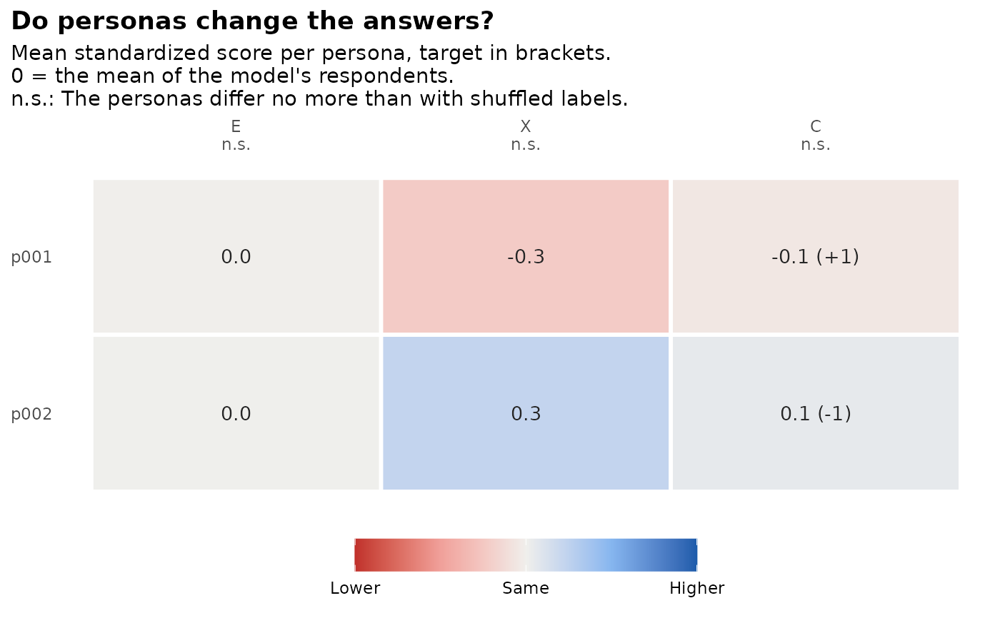

persona_fidelity() asks whether the personas given to a language model
change its answers, which a persona-based run takes for granted. It scores
every synthetic respondent on each scale of the instrument (the keyed mean
of its items) and answers two questions per model:
Usage
persona_fidelity(
synthetic,
instrument,
personas = NULL,
real = NULL,
persona = "persona_id",
scale = NULL,
n_perm = 200,
seed = 1
)Arguments
- synthetic
the synthetic responses: A data frame with a
modelcolumn, a persona column and one column per item, as returned bygenerate_synthetic().- instrument
an
sc_instrument()whose items have ascalecolumn, or an item table such as hexaco_items (thenscalegives the response range).- personas
optional
sc_personas()table withtarget_<scale>columns (see Details).- real
optional data frame of real responses, used to standardize the scale scores.
- persona
name of the persona column in
synthetic.- scale
the lowest and highest response category, needed only when
instrumentis an item table.- n_perm
number of label shuffles for the null distribution.
- seed
random seed for the shuffles.
Value
An object of class sc_fidelity: A list with separation (one
row per model and scale: eta2, null, p, separated), direction
(one row per model and persona, when there are targets: n, r,
gap, agree), profiles (mean standardized score and target per
model, persona and scale), scores (per respondent) and settings. It
has print(), tidy() and autoplot() methods.
Details
Do personas separate respondents? The share of the variance of each scale score that lies between personas (eta squared). It is compared with the same data after shuffling the persona labels
n_permtimes:nullis the 95th percentile of eta squared without any persona effect, andpthe share of shuffles that reach the observed value. A model that ignores its personas has eta squared nearnull.Do they move in the intended direction? Only when the persona table holds targets: One column
target_<scale>per scale, with the standardized score the persona should have (for example 1 for "high", 0 for "average", -1 for "low";NAfor no target). Each persona's mean standardized scale scores are compared with its targets:ris their correlation across scales (needs three or more targets),gapthe mean absolute difference, andagreethe share of targets whose sign the persona matches.
Scale scores are standardized with the mean and standard deviation of the
real data when real is given, so a target of 1 means one standard
deviation above real people. Without real, each model's own respondents
are the reference, so targets compare personas with each other.
The check shows whether a model follows its personas. It does not show
that the persona's answers resemble those of real people like the
persona. For that, benchmark the run against real data (see
authenticity_benchmark()).
Examples
# Personas that should differ in Conscientiousness, answered by the mock
# provider, which ignores personas: The check finds no separation.
ins <- sc_instrument(hexaco_items[hexaco_items$trait %in% c("C", "X", "E"), ],
scale = c(1, 7))
per <- sc_personas(data.frame(
description = c("You plan everything and never miss a deadline.",
"You act on impulse and leave tasks unfinished."),
target_C = c(1, -1)))
syn <- generate_synthetic(ins, sc_model("mock"), per, respondents = 10,
progress = FALSE, cache = FALSE)
fid <- persona_fidelity(syn, ins, per, n_perm = 50)
fid
#> Persona check
#> 3 scales; scores standardized against each model's own respondents; 50 label shuffles.
#>
#> Do personas separate respondents? (eta squared, against shuffled labels)
#> model scale eta2 null p separated
#> mock E 0.00 0.25 1.00 FALSE
#> mock X 0.12 0.20 0.12 FALSE
#> mock C 0.01 0.15 0.84 FALSE
#>
#> Do they move in the intended direction?
#> model persona n targets r gap agree
#> mock p001 10 1 NA 1.08 0
#> mock p002 10 1 NA 1.08 0
#>
#> mock: Personas do not change the scale scores more than shuffled labels do. The personas match the sign of 0% of their targets.
gg_persona_fidelity(fid)
